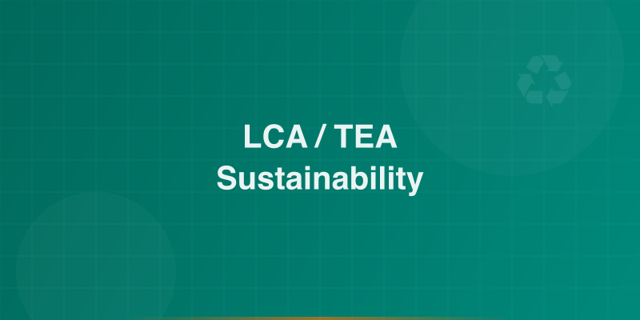

Work — Selected Projects¶
Selected projects presented in Problem-Action-Result (PAR) format, demonstrating how advanced modeling and optimization drive measurable impact across industries.
1. Partial Disruption Modeling for Pharmaceutical Supply Chains¶
Problem
Pharmaceutical supply chains are vulnerable to partial disruptions — capacity losses that degrade performance without fully shutting down operations. Traditional models assume total disruption, leading to misallocated resources and suboptimal contingency plans.
Action: Developed a stochastic mixed-integer programming framework using Python and Pyomo that captures partial disruption scenarios, modeling capacity degradation as a continuous spectrum rather than a binary event.
Result:
- Identified previously invisible risk exposure missed by binary disruption models
- Reduced expected disruption costs by enabling targeted mitigation investments
- Provided decision-makers with a realistic risk landscape for strategic supply chain planning
2. Agent-Based Advisor-Student Matching Optimization¶
Problem
Matching graduate students with faculty advisors is a complex, multi-stakeholder problem where misalignment leads to attrition, reduced research productivity, and suboptimal outcomes for both parties.
Action: Designed an agent-based simulation framework in Python where students and advisors act as autonomous agents with heterogeneous preferences, constraints, and objectives. The model optimizes matching quality across multiple dimensions.
Result:
- Demonstrated measurable improvement in match quality over baseline methods
- Delivered a scalable framework adaptable to other matching and allocation problems
- Highlighted the value of multi-agent modeling for institutional decision-making
3. Sustainability Modeling & LCA/TEA for Industrial Systems¶

Problem
Industrial operators face growing pressure to reduce environmental footprint while maintaining economic viability. Quantifying the true cost-sustainability trade-off is essential for informed capital allocation and regulatory compliance.
Action: Built integrated Life Cycle Assessment (LCA) and Techno-Economic Analysis (TEA) models incorporating AWARE water footprint methodology, enabling holistic evaluation of environmental and economic performance across process alternatives.
Result:
- Quantified environmental and economic performance for multiple process configurations
- Enabled data-driven capital allocation decisions aligned with sustainability targets
- Delivered actionable recommendations for industrial stakeholders and policymakers
4. Dow Industrial Process Optimization¶
Problem
Large-scale chemical manufacturing operations require continuous process optimization to maintain efficiency, reduce waste, and respond to shifting market and regulatory conditions.
Action: Applied advanced optimization and data analytics (Python, SQL, Pyomo) to real-world industrial processes at Dow, integrating process data with mathematical models to identify efficiency gains and operational improvements.
Result:
- Delivered measurable efficiency improvements in target manufacturing processes
- Strengthened the bridge between R&D and plant-floor operations
- Demonstrated the practical value of optimization science in an industrial setting
Professional Experience¶
| Role | Organization | Focus |
|---|---|---|
| Scientist | Dow | Sustainability, AI, Data Engineering |
| PhD Researcher | University of Delaware | Optimization, Data Science, Sustainability |
| Research Assistant | University of Lagos | Process Design, Control & Optimization |
| Oil Field Engineer | Eunisell Limited | Oil Field Chemicals, Flow Assurance, Project Management |
| Process Engineering Intern | Shell | Industrial Process Optimization |